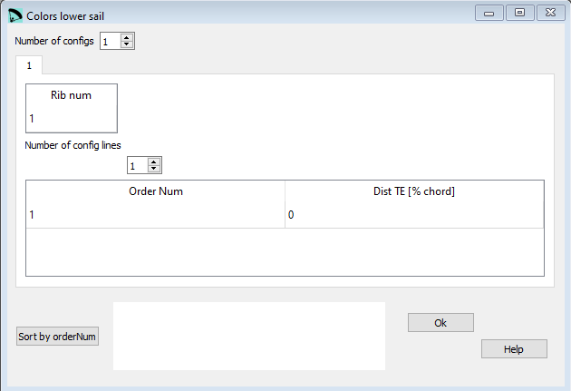

Colors lower sail¶
If you want to use different colors in the lower sail you can configure the settings in this window.
Colors lower sail does use the same definitions as Colors upper sail. A programming example you can find here
{kind=link}
Raw data:
*****************************************************
* 16. Intrados colors
*****************************************************
1
1 1
1 0. 0.
Number of configs¶
Colors lower sail is an optional section.
If you do not want to define/ use these parameters set the Number of configs value to 0.
Rib num¶
The rib number for which you define the color marks.
Dist TE¶
Distance from Trailing edge in [% chord] of the mark.
Sort by Order Num¶
The button Sort by Order Num can be used to rearrange the definition lines. If for whatever reasons you will rearrange the lines, just define the numbering in an ascending order and press the Order button afterwards. Lepg will reorder the lines according to the numbering you’ve choosen.
A more detailed description you can find here Laboratori d'envol website.